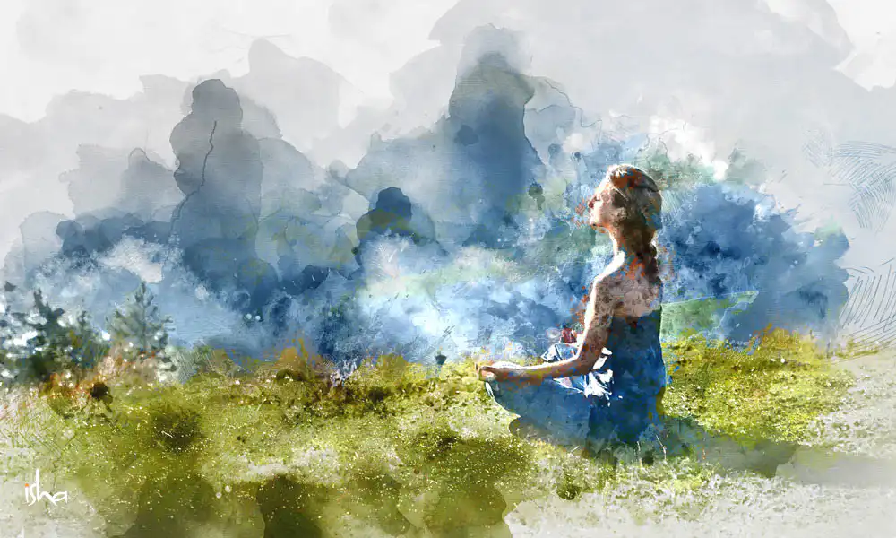

PERSISTENT
基本資料
我的興趣
我的經驗
聯絡方式
Practice makes perfect.
關於我
正就讀於中原⼤學資訊管理學系，現今20歲，性別女。你好！我叫郭書安，我相信每個挑戰都是⼀個學習的機會，⽽我正⾛在這條不斷成長的道路上。
基本資料
姓名:郭書安
個性:熱情/活潑/堅毅
優點:學習自主獨立
高中經歷：在高中時期，我開始學習Python編程。 透過參加校內課程和專案，我掌握了編程基礎，並學會如何自我設定學習目標和解決問題。
大學參與：目前，我在大學參加了一個服務性質的社團，專注於照顧校園流浪狗。 作為幹部，我負責組織活動和協調志工工作，這讓我更關心動物福祉並提升了團隊合作能力。
缺點
過於自我要求：有時我對自己設定的標準過高，這可能會導致不必要的壓力
時間管理需加強：在多項任務之間，有時我會感到難以平衡，這是我正在努力改善的地方
不喜歡公開表達：儘管我喜歡與人溝通，但在大型場合中公開發言仍然讓我感到緊張
個人特質
因熱愛而執著，因夢想而堅持
自兒時起，我便因對鋼琴的興趣而開始學習。 隨著時間的推移，我愈加喜愛樂曲所帶來的各種感受。 為了實現自己的目標，我決定考取英國皇家鋼琴檢定的8級證照，這是一個我為自己設定的重要里程碑。 在十年的努力下，我成功完成了這一目標，並未因升學壓力、時間管理或偶爾的怠惰而放棄。 對於我的興趣項目，我始終保持著堅持與努力。 正如拿破崙所說：「達到目標只有兩個途徑——努力及毅力。」 這句話深深激勵著我，讓我在追求夢想的道路上不斷前行。
因熱愛而執著，因夢想而堅持
自兒時起，我便因對鋼琴的興趣而開始學習。 隨著時間的推移，我愈加喜愛樂曲所帶來的各種感受。 為了實現自己的目標，我決定考取英國皇家鋼琴檢定的8級證照，這是一個我為自己設定的重要里程碑。 在十年的努力下，我成功完成了這一目標，並未因升學壓力、時間管理或偶爾的怠惰而放棄。 對於我的興趣項目，我始終保持著堅持與努力。 正如拿破崙所說：「達到目標只有兩個途徑——努力及毅力。」 這句話深深激勵著我，讓我在追求夢想的道路上不斷前行。
彈琴
⾳樂不僅讓⼈放鬆，更能在不知不覺中陶冶性情，⾳樂是⼼靈的滋養劑，它在舒緩我的同時，也讓內在變得更豐富。
閱讀
閱讀是⼀扇通往新世界的窗，讓我在放鬆中探索無限的可能，閱讀是靈魂的修⾏，它在字裡⾏間教會我同理⼼與思考的深度
冥想

冥想是⼼靈的洗禮，它幫助我在繁忙的⽣活中找到⽚刻的安寧，並培養持久的專注與清晰，每⼀次冥想都是⼀個重新發現⾃⼰的機會。
鋼琴
通過 ABRSM 鋼琴八級檢定
程式語言
Java
Python
音控燈控
會簡略操控⾳控台及燈控台
工作經驗
曾在 清華補習班 擔任協導
⽬前在中原⼤學 教堂擔任⾳控燈控⼯讀⼈員
社團
曾在中原⼤學動物服務社擔任 資訊 ⼀職
在中原⼤學動物服務社照顧被收容之流浪犬
志工之道―
從管理學中學生命教育
點我檢視 >> 管理學企劃書